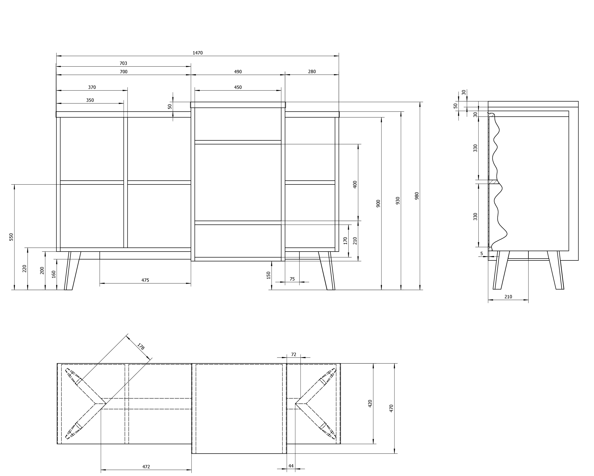

SERIE SIXAY

Serie Sixay es un proyecto de diseño de mobiliario desarrollado en colaboración con la empresa Sixay, centrado en la creación de piezas funcionales y atemporales que combinan simplicidad formal, rigor técnico y viabilidad industrial.

El proyecto se caracteriza por una cuidada selección de materiales, un estudio preciso de las uniones y una atención especial a los procesos de fabricación, buscando siempre un equilibrio entre estética y producción eficiente.
A través del desarrollo técnico y los planos constructivos, la Serie Sixay demuestra la importancia del diseño industrial como disciplina que conecta creatividad, ingeniería y realidad productiva.